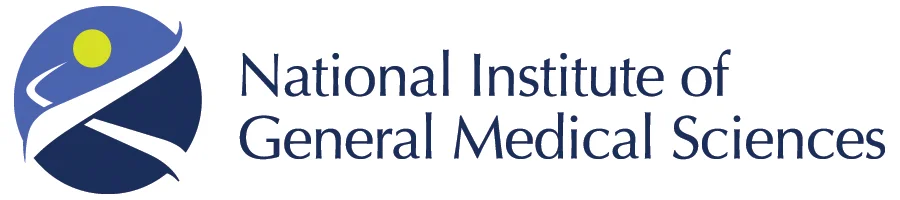
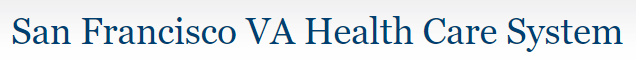

FDI Lab is supported by the National Institutes of Health and the United States Department of Veterans Affairs.


FDI Lab acknowledges the support of its funding agencies. Any opinions, findings, conclusions, or recommendations expressed are those of the researchers and do not necessarily reflect the views of the funding agencies.